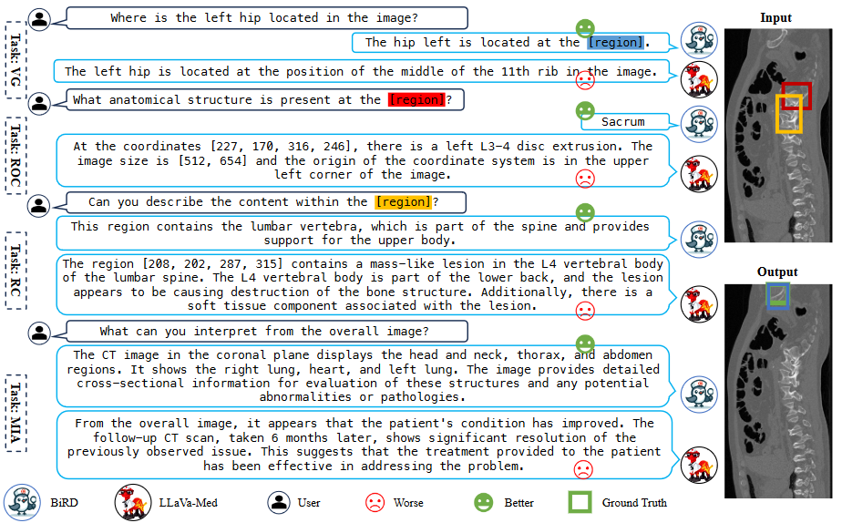
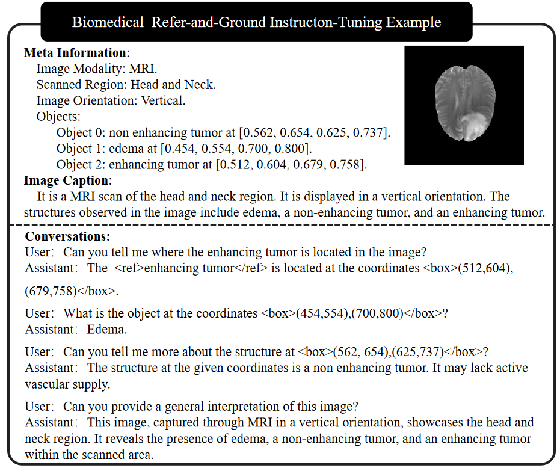
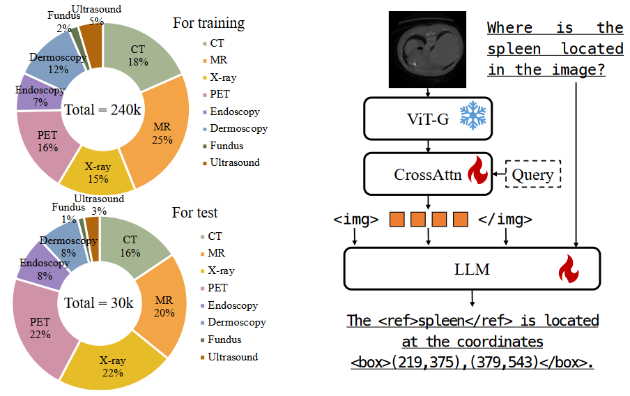
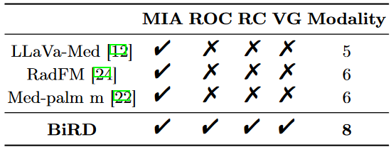
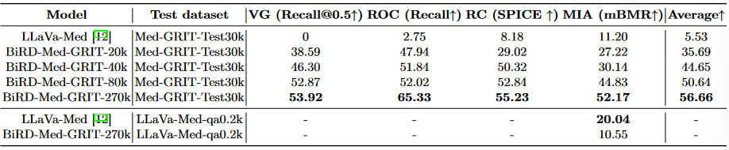
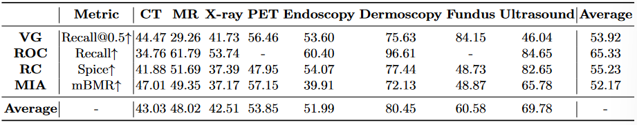
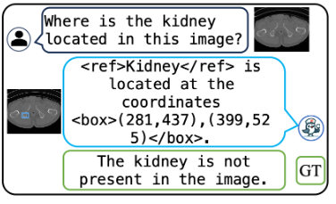

MICCAI2024(2)-BIRD
论文地址：https://papers.miccai.org/miccai-2024/paper/1279_paper.pdf
代码地址：https://github.com/ShawnHuang497/BiRD
BiRD
摘要与引言
生物医学领域的语言和文本不同于自然语言与自然文本，导致常规的视觉助手在生物医学领域表现不佳。这些助手要么无法回答生物医学问题，要么更糟糕的是，提供不准确的回答或完全虚构的信息。
目前生物医学领域的MMLM研究主要集中于图像描述和VQA，在“refer”和“ground”能力方面仍存在显著的缺失，如图1所示：
- “refer”要求模型能够准确地理解特定区域的语义内容
- “ground”则需要模型根据提供的语义描述对区域进行定位

这些细粒度的多模态能力对于智能生物医学助手与患者之间的交互过程和生物医学教育至关重要。这项能力不仅使信息交换过程更加直观，还显著提高了信息交换的准确性和效率。在生物医学领域缺乏多模态细粒度交互数据集是阻碍这一能力发展的主要因素。
基于此，本文的主要贡献如下：
- Med-GRIT-270k数据集：第一个生物医学领域的“refer and ground”指令调优数据集。包含27万对问答，涵盖八种不同的医学成像模式。基于医学分割数据集（SA-Med2D-20M）构建。通过ChatGPT对大规模的生物医学图像-掩码对进行转换，生成了多模态对话数据集。
- 首个生物医学“refer和ground”多模态大语言模型BiRD：利用Med-GRIT-270k数据集和多任务指令学习微调，通过该模型验证了多任务指令调优的有效性，并为将MLLMs应用于生物医学专业领域提供了最佳实践。
- 推动生物医学多模态学习研究的发展
相关工作
生物医学多模态大语言模型：生物医学领域中的一些代表性工作包括BioMedGPT、RadFM、LLaVa-Med等
- LLaVa-Med：利用预训练LLM进行视觉指令微调，开发了一种能够处理图像输入的端到端多模态生物医学聊天机器人。
- RadFM：一个支持2D/3D放射影像输入的多模态大语言模型
由于于各种挑战，能够支持细粒度交互的生物医学MLLM尚未出现
用于refer和groud的多模态大语言模型：尽管一些研究已经开始在生物医学领域探索定位问题，但这些方法只能应用于小规模模型，因为数据量有限且成像模式较少。这些项目成功的关键在于其对相关大规模数据集的可访问性。在生物医学领域中，几乎不存在多模态细粒度交互数据集。

Med-GRIT-270k数据集
该数据集通过人工与人工智能的协作从大规模生物医学图像分割数据集中生成。生成过程分为三个步骤：
- 基于每张图像的掩码手动生成实例级的元信息；
- 利用AI助手生成图像的全局信息；
- 基于前两步获得的元信息和全局图像信息，利用AI助手生成细粒度的对话内容。
生成实例级元信息 首先从SA-Med2D-20M数据集中抽样生物医学图像和掩码对，最终从该数据集中抽取了大约6万张图像，考虑了成像模式的多样性和冗余性。例如，原始数据集中包含了大量的3D数据切片，导致数据的高度相似。随后，我们根据实例级的掩码计算了每个实例的坐标。具体来说，空间位置通过文本格式[, , , ]表示，并将坐标标准化为[0,1]范围内。最后，我们为图像添加了额外细节信息，以编译元信息，包括成像模式、扫描区域、方向和对象坐标。
生成图像描述 我们利用精心设计的提示词结合提供的元信息，通过ChatGPT获得每张图像的全局信息。
生物医学指令微调数据 空间理解通过各种任务格式呈现，主要包括两种类型及其相应的任务名称：
- 区域输入与文本输出：Referring Object Classification（ROC）、Referring Captioning（RC）
- 文本输入与区域输出：Visual Grounding（VG）
- 文本输入与文本输出：Medical Image Analysis（MIA）
为减少歧义并增强模型的细粒度视觉理解能力，采用了一些重要策略。引入了特殊标记（<ref>和</ref>）来标识边界框所指代的内容，将边界框与对应的描述词或句子关联。此外，我们指示ChatGPT为每个任务设计一个问答。
最后，我们将坐标映射到[0, 1000]范围内，并重新格式化为(, )、(, )。为了区分detection strings和regular text strings，分别在边界框字符串的开头和结尾添加了两个特殊标记（<box>和</box>）。图2展示了我们生成的指令微调数据的一个示例。
多任务指令学习
我们的目标是通过多任务学习使多模态大语言模型（MLLM）具备refer和groud能力，同时确保模型保留其基本的对话能力。本节将从模型架构和多任务指令训练两个方面进行阐述。
模型架构
我们采用Qwen-VL作为基础的通用领域语言模型。具体来说，视觉编码器使用Vision Transformer（ViT）架构，并从OpenAI的CLIP ViT-BigG模型的预训练权重初始化。视觉-语言适配器使用带有可训练query的交叉注意力机制。大语言模型则采用了预训练的Qwen-7B模型。
多任务指令训练
考虑到基础模型已经具备在自然图像中进行“refer”或“ground”的能力，我们仅在one stage中用Med-GRIT-240k数据集对预训练的基础模型进行微调。
如图3所示，我们仅微调交叉注意力和大语言模型的参数，而视觉编码器保持冻结状态。输入图像通过ViT-BigG和视觉-语言适配器进行处理，生成固定长度的视觉特征序列。我们在图像特征序列的开头和结尾分别添加标记（<img>和</img>），用于表示视觉内容的起始和结束。我们使用包含6万张图像和总共24万对话轮次的数据集进行模型微调。全局训练批次大小为128，学习率为2e−5，采用余弦调度器。多任务指令训练在4个A100（40G）GPU上仅花费了30小时。

实验
评估数据集 我们随机选取了构建的Med-GRIT-270k数据集中的约12%的图像和对话作为测试集。考虑到单个3D数据集中包含多个数据切片，我们完整提取了其中的样本，以避免测试集数据泄露到训练集中。这样可以确保同一3D数据集的不同切片不会同时出现在训练集和测试集中，从而保证测试结果的可靠性。
评估指标 四个任务的评估指标分别为：Recall@0.5、Recall、SPICE和mBMR。Recall@0.5表示预测的边界框与真实边界框的交并比（IoU）超过0.5时才视为正确。用于评估医学图像分析（MIA）任务的mBMR是BLEU@4、METEOR和ROUGE-L的平均值，比单一指标更能全面评估预测质量。
对比 如表2所示，我们是首个开发具备参考和定位能力的医学多模态大语言模型，而现有的多模态大语言模型（如Qwen-VL、GPT-4、MiniGPT-v2等）尚未用于医学refer和groud数据集。因此，我们不会在评估指标上与这些模型进行对比，以避免不公平。

如表1所示，我们展示了LLaVa-Med模型的定量测试结果以及数据规模对结果的影响。在第3至第6行中，我们观察了不同数据规模下BiRD-Med-GRIT模型的性能。随着训练数据的增加，所有指标均显著提升，平均值从35.69提高到56.66，这表明增加数据集规模有助于提升模型在多模态数据集上的表现。特别是当数据集达到240k时，模型在所有指标上均达到了最高分，表现出最佳的整体性能。

从表1的第1行和第6行可以看出，LLaVa-Med模型在Med-GRIT-Test30k数据集上的表现较差，特别是在区域级视觉内容定位方面无效（Recall@0.5为0）。同时，我们还在LLaVa-Med的qa-0.2k测试集上评估了我们的模型。表1的最后两行显示，由于我们未在LLaVa-Med数据集上进行训练，因此在其测试集上的指标略低于该模型自身。然而，在我们的测试集中进行的类似MIA任务中，LLaVa-Med的mBMR得分为11.20，明显低于我们模型在相同任务下的得分（52.17）。
主要结果 如表3所示，我们展示了BiRD模型在八种不同医学成像模式下四项任务的表现。ROC任务测试了MLLM对与特定图像区域相关的文本及其视觉细节的理解能力。PET和眼底图像仅关注一个类别，因此未在这些模式下进行训练或评估。我们发现ROC的召回率主要取决于对象和特征在图像模式中的多样性和显著性。RC任务测试模型识别图像区域并用语言描述的能力。模型在超声图像和皮肤镜图像上的表现较好，但在更具多样性的CT图像上表现较差。VG任务测试模型将文本描述与图像区域匹配的能力。MR模式的表现最差，可能是因为该模式主要包含肿瘤组织，解剖结构相对较少。这一问题在超声图像中也有所体现。MIA任务则测试了模型对医学图像的理解。表3的第4行显示，模型在几乎所有模式下都具有一定的分析和理解能力。

在四个评估任务中，皮肤镜成像模式的表现最为突出。这可以归因于其独特的视觉特征、较少的对象类别以及对象区域占据了图像的大部分，使该模式的任务相对简单。
对象幻觉 如图4所示，我们在BiRD模型中也观察到了object幻觉现象。这种现象较为常见，在其他多模态大语言模型中也有所体现。我们认为这是由于模型的视觉编码器被冻结，且其初始化参数几乎没有接触过医学影像，导致在特定领域或主题的特征提取上缺乏充分理解。因此，未来研究中应对此现象给予更多关注。

局限性
尽管本研究开发了一个新颖的生物医学多模态数据集，但在数据构建过程中，大多数原始数据集仅为样本注释了特定器官或疾病。这使得构建高度相关的负样本变得困难。该问题将成为后续数据构建工作中的重点。